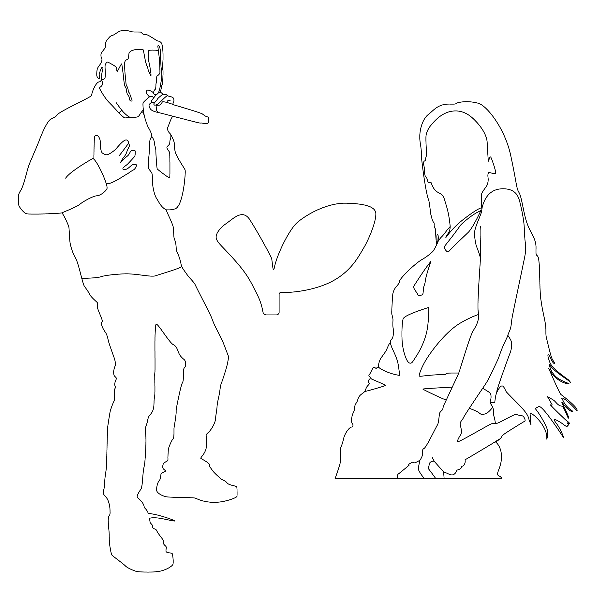
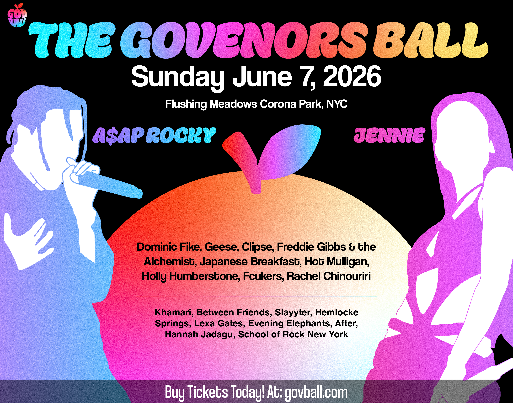
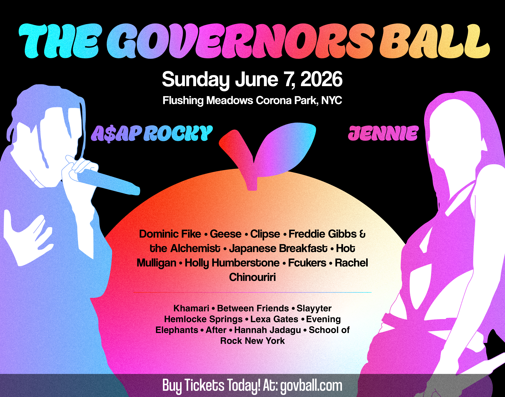
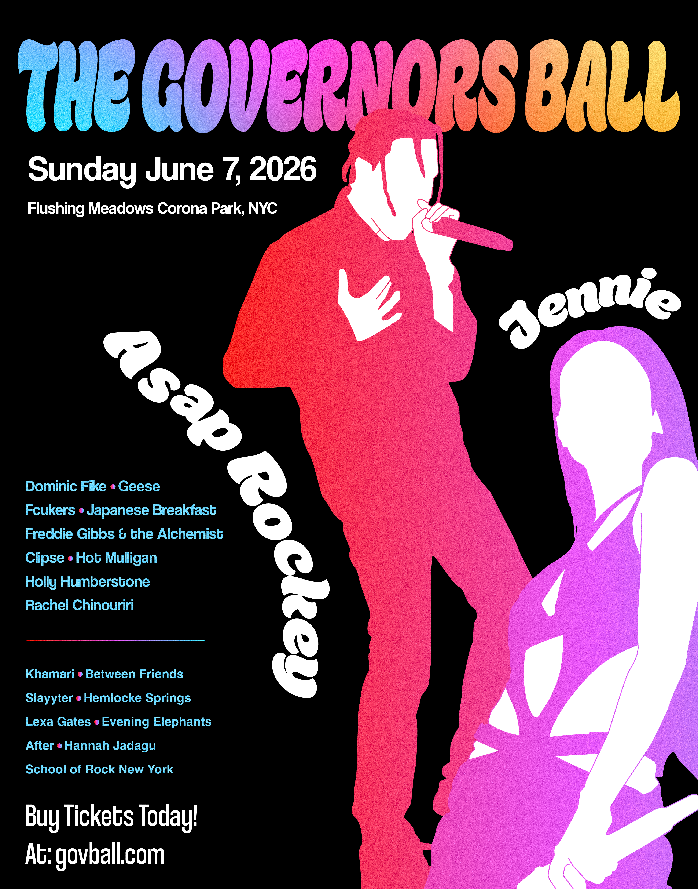

Initial Drafts
Graphics
To properly highlight the most anticipated artists, I traced the silhouettes of these artists on illustrator to place on the poster. With these graphics, the artists are easily noticable on the posters. I also traced the leaf part of the GovBall logo to use on one of the posters.

Horizontal Poster: First Draft
This version of the Horizontal Poster needed a lot of small changes. The logo was out of place on the poster, and the hierarchy of the date and location needed fixing. The names of the artists also needed to be stylized overall. There was also a typo error on this poster.

Vertical Poster: First Draft
This version of the Vertical Poster also had the typo, and wasn't stylized enough to properly grab the attention of the targetted audience. The hierarchy of the poster needed fixing, and the artists needed to stand out more on the poster.

Final Drafts
Horizontal Poster: Final Draft
The hierarchy of the Horizontal Poster was improved from the previous draft, and the names of the artists have been stylized to look better on the poster. The poster is now much more balanced, and the artists are now easily readable.

Vertical Poster: Final Draft
The final draft of the Vertical Poster is now an improved and stylized design poster overall. The hierarchy of the poster is better established, and the names of the artists were placed intentionally for the reader to gradually read every part of the poster. The artists stand out properly as the eye catcher for the poster, fully utilizing their anticipation for the event.
